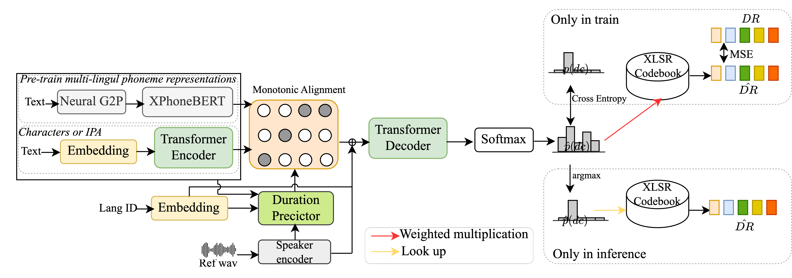

While neural text-to-speech (TTS) has achieved human-like natural synthetic speech,
multilingual TTS systems are limited to resource-rich languages
due to the need for large paired text and studio-quality audio data.
This paper proposes a method for zero-shot multilingual TTS using discrete speech representations from a pre-train multi-lingual SSL model.
Inspired by the strong cross-lingual transferability of multilingual language models, our framework first corporate pre-trained multilingual
representations and text encode with pre-train SSL speech representations.
Experiments on the high-resources language show our model’s effectiveness in terms of speech naturalness and similarity for both
seen and unseen speakers, and
frequency analysis of the discrete representaions show that cross-lingual phonetic information about speech production is
preserved in extracted discrete vectors. We also verify the effectiveness of the method on several
hypothesized low-resource languages. This promisingly indicates that even without any training data for new unseen language, our proposed approach could synthesized audio that is understandable and has high speaker similarity.

Seen speaker results:
Input Text
English:a stooped old lady with a mottled face a hooked nose and a hard gray eye mrs pipchin took little children to board and her idea of managing them
French:Le concept d'emploi budgétaire est utilisé lors de la négociation entre le ministère du budget et le ministre chargé de l'enseignement supérieur
German:der Oberste Sowjet hatte es mehrheitlich abgelehnt das geltende Gesetz über ein Referendum mit den Beschlüssen des Kongresses in Einklang zu bringen
Portuguese:os presidentes se reuniram na cidade de Latakia na Síria mas nenhum dos dois se pronunciou sobre a vitória de Netanyahu
Spanish:Los vendedores ofrecen cada vez más ambas drogas lo que ha hecho la heroína tan disponible como el crack también llamado piedra
Swedish:Vi har svårt att påverka investeringsviljan direkt men genom att exempelvis erbjuda olika finansieringsalternativ kan vi positivt påverka kundens likviditetsbehov
Method
English
French
German
Portuguese
Spanish
Swedish
Base1C
Base2C
Pro1C
Pro2C
Base1X
Base2X
Pro1X
Pro2X
YourTTS
GT
Unseen speaker results:
Input Text
English:he lifted his head with a jerk and swung the quail away from the heat leaving it still suspended and taking his rifle from its pegs stood for a moment in his door listening
French:Au niveau national le premier délégué assume toutes les responsabilités pour ce qui concerne le concours national de mémoires
German:du starker tod dein schweigen machet graun hast du uns nur die totengruft zu bieten sollt nicht der geist die jakobsleiter schaun und fortbestehn nur in den
Portuguese:essa atitude já mudou o Alca é uma prioridade de Washington enquadrada na moldura da estratégia de de incentivo das exportações americanas
Spanish:La primera reunión entre negociadores palestinos y judíos se efectuará el domingo en la frontera entre Israel y Gaza con la participación del mediador norteamericano Dennis Ross
Swedish:flera beväpnade protester i Shimba tidigare slagits ner av Mobutus trupper